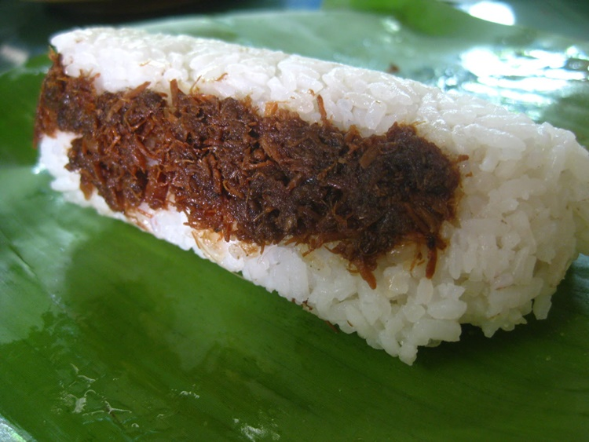

What is Pastil?
The dish known as Pastil is a classic in the Mindanao region, also known as Patil, Patel, Patir, or pater in Maranao, and Paster in Iranun. It is also known as "Kagikit," a simple dish prepared with shredded meat that may be either chicken, beef, or fish. The meat is prepared by sauteing it with onion, garlic, and soy sauce in vegetable oil until it turns brown.
Ingredients :
½ cup Canola Oil
2 cloves Garlic minced
1 med. Red Onion minced
350 g Chicken boiled & Shredded
4 tablespoon Soy Sauce
3 tablespoon White Vinegar
1½ tablespoon White/Brown Sugar
½ teaspoon Black Pepper
½ teaspoon Turmeric Powder optional
2 tablespoon Margarine optional
Instructions :
~ Shredded Chicken ~
In a pot add 1 liter of water, 1 teaspoon Salt and 1 teaspoon Black Pepper & 2 Laurel Leaves
Add 350g Chicken Breast Fillet
Boil on med. heat for about 15 mins.
Drain, let it cool down & shred the chicken
~ Let's Fry ~
In a fry pan pour ½ cup Oil
Add minced Garlic and minced Red Onion
Fry until translucent then add 350g shredded chicken and saute
Add ½tsp Black Pepper, ½tsp Turmeric & 1½tbsp Sugar
Add 4 tablespoon soy sauce & saute
Add 3 tablespoon vinegar & let it simmer
add 2 tablespoon margarine (optional)
Fry until chicken flakes are crispy
~ Assemble ~
Originally Pastil is wrapped in Banana Leaves.
But I'm using a 400ml Plastic Container at the moment.
½ cup of Rice, Lettuce (optional), Tomato,
hard boild Egg & ¼ cup of Pastil
You can also add Cucumber
Serve and Enjoy!